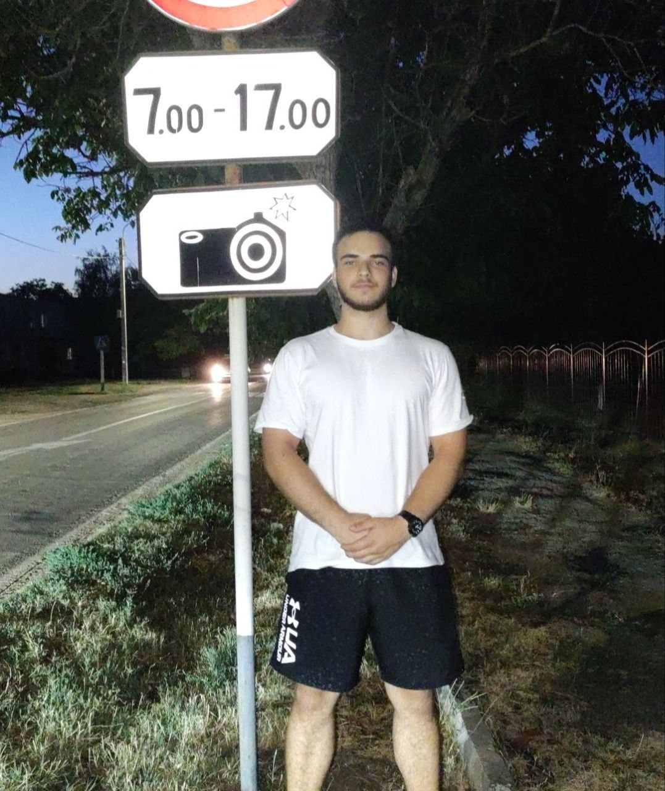

Gli autori
Siamo in due. Abbiamo diviso il lavoro: chi ha lavorato (Maxim) e chi continuava a mandare meme sul gruppo... (Michel)

Maxim Solonaru
Head CochColui che ha avuto l'idea di fare tal sito. E anche Cretive Director (tipo quello che ci ha messo il contenuto dentro)

Michel Vitali
Assitent CochColui che è il maestro di CS:GO 2, e contributtore X (ex. Twitter) con commenti razziali verso il suo compgano Maxim e Toure.
Domande poco frequenti
Risposte alle domande che il professore dovrebbe* farci durante la presentazione.
Perché avete scelto questo argomento?
Perché è molto semplice, e chill, alla fine usiamo quello che ci ha insegnato il nostro prof. Arci nel ultimo periodo, ossia i grid e le card.
Avete usato framework CSS come Bootstrap o Tailwind?
No, perché se no poi divento un Web Developer.
Come avete usato l'intelligenza artificiale?
Si l'abbiamo usata. E lei?
Quante ore ci avete lavorato?
Circa 10-15 ore in totale. Proprio il 4 maggio qunado ci simao ricordati che esiste una consegna particolare.